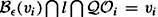
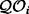
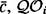
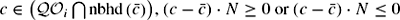

|
| |||||||||||||
|
|
||
The defining characteristics of a visibility map are that its nodes share an edge if they are within line of sight of each other, and that all points in the robot's free space are within line of sight of at least one node on the visibility map. This second statement implies that visibility maps, by definition, possess the properties of accessibility and departability. Connectivity must then be explicitly proved for each map for the structure to be a roadmap. In this section, we consider the simplest visibility map, called the visibility graph [262,298].
The standard visibility graph is defined in a two-dimensional polygonal configuration space (figure 5.3). The nodes νi of the visibility graph include the start location, the goal location, and all the vertices of the configuration space obstacles. The graph edges eij are straight-line segments that connect two line-of-sight nodes νi and νj, i.e.,
Note that we are embedding the nodes and edges in the free space and that edges of the polygonal obstacles also serve as edges in the visibility graph.
By definition, the visibility graph has the properties of accessibility and departability. We leave it to the reader as an exercise to prove the visibility graph is connected in a connected component of free space. Using the standard two-norm (Euclidean distance), the visibility graph can be searched for the shortest path (figure 5.4) [366]. The visibility graph can be defined for a three dimensional configuration space populated with polyhedral obstacles, but it does not necessarily contain the shortest paths in such a space.
Unfortunately, the visibility graph has many needless edges. The use of supporting and separating lines can reduce the number of edges. A supporting line is tangent to two obstacles such that both obstacles lie on the same side of the line. For nonsmooth obstacles, such as polygons, a supporting line l can be tangent at a vertex νi if . A separating line is tangent to two obstacles such that the obstacles lie on opposite sides of the line. See figure 5.5 for an example of supporting and separating lines.
The reduced visibility graph is soley constructed from supporting and separating lines. In other words, all edges of the original visibility graph that do not lie on a supporting or separating line are removed. Figure 5.6 contains the reduced visibility graph of the example in figure 5.4. The notion of separating and supporting lines can be used to generalize the visibility graph method for curved obstacles [294].
At first, the definitions of the supporting and separating lines may seem to only apply to convex obstacles. However, this definition applies to nonconvex shapes as well. Here, we use the notion of local convexity. Recall that convex sets in the plane have the property that for all points on their boundary, there exists a line orthogonal to the surface normal that separates the convex set. This means that the set lies entirely on one side of the line. A set is locally convex at a point c if the hyperplane tangent to c separates the points in a neighborhood of c on the boundary of the convex set . In other words, when N is the surface normal at  is locally convex at c if for all . Convex obstacles are locally convex everywhere on the boundary of the set. Figure 5.7 contains a reduced visibility graph for a configuration space with nonconvex obstacles. The reduced visibility graph is beneficial because it has fewer edges making the search for the shortest path more efficient.
Let V ={?1, ..., νn} be the set of vertices of the polygons in the configuration space as well as the start and goal configurations. To construct the visibility graph, for each ν ∊ V we must determine which other vertices are visible to ν. The most obvious wayto make this determination is to test all line segments ννi, ν ≠ νi to see if they intersect an edge of any polygon. For a particular ννi, there are O(n) intersections to check because there are O(n) edges from the obstacles. Now, there are O(n) potential segments emanating from ν, so for a particular ν, there are O(n2) tests to determine which vertices are indeed visible from ν. This must be done for all ν ∊ V and thus the construction of the visibility graph would have complexity O(n3).
There is a more efficient way to compute the set of vertices that are visible from ν. Imagine a rotating beam of light emanating from a lighthouse beacon. At any moment, the beam illuminates the object that is closest to the lighthouse. Furthermore, as the beam rotates, the obstacle that is illuminated changes only at a finite number of orientations of the beam. If the obstacles in the space are polygons, these orientations occur when the beam is incident on a vertex of some polygon. This insight motivates a class of algorithms known in the computational geometry literature as plane sweep algorithms.
A plane sweep algorithm solves a problem by sweeping a line, called the sweep line, across the plane, pausing at each of the vertices of the obstacles. At each vertex, the algorithm updates a partial solution to the problem. Plane sweep algorithms are used to efficiently compute the intersections of a set of line segments in the plane, to compute intersections of polygons, and to solve many other computational geometry problems.
For the problem of computing the set of vertices visible from ν, we will let the sweep line, l, bea half-line emanating from ν, and we will use a rotational sweep, rotating l from 0 to 2π. The key to this algorithm is to incrementally maintain the set of edges that intersect l, sorted in order of increasing distance from ν.If a vertex νi is visible to ν, then it should be added to the visibility graph (algorithm 5). It is straightforward to determine if νi is visible to ν. Let be the sorted list of edges that intersects the half-line emanating from ν; the set is incrementally constructed as the algorithm runs. If the line segment ννi does not intersect the closest edge in , and if l does not lie between the two edges incident on ν (the sweep line does not intersect the interior of the obstacle at ν), then νi is visible from ν.
Input: A set of vertices {νi} (whose edges do not intersect) and a vertex ν
Output: A subset of vertices from {νi} that are within line of sight of ν
1: For each vertex vi, calculate αi, the angle from the horizontal axis to the line segment
ννi.
2: Create the vertex list , containing the αi 's sorted in increasing order.
3: Create the active list , containing the sorted list of edges that intersect the horizontal
half-line emanating from ν.
4: for all αi do
5: if νi is visible to ν then
6: Add the edge (ν, νi )to the visibility graph.
7: end if
8: if νi is the beginning of an edge, E, not in then
9: Insert the E into .
10: end if
11: if νi is the end of an edge in then
12: Delete the edge from  .
13: end if
14: end for
.
13: end if
14: end for
Figure 5.8 shows an example configuration space containing two obstacles with vertices ν1, ..., ν8. Table 5.1 shows how the data structures are updated as the algorithm proceeds from initialization to termination. Step 1 of the algorithm determines the angles, αi 's, at which the line l will pause; such angles correspond to the vertices of the obstacles. In step 2 of the algorithm, these angles are used to construct the vertex list, , and in step 3 the active list is initialized. After initialization, and are the sorted lists:
|
Vertex |
New |
Actions |
|---|---|---|
|
Initialization |
{E4, E2, E8, E6} |
Sort edges intersecting horizontal half-line |
|
α3 |
{E4, E3, E8, E6} |
Delete E2 from . Add E3 to . |
|
α7 |
{E4, E3, E8, E7} |
Delete E6 from . Add E7 to . |
|
α4 |
{E8, E7} |
Delete E3 from . Delete E4 from . ADD (ν, ν4)to visibility graph |
|
α8 |
{} |
Delete E7 from . Delete E8 from . ADD (ν, ν8)to visibility graph |
|
α1 |
{E1, E4} |
Add E4 to . Add E1 to . ADD (ν, ν1)to visibility graph |
|
α5 |
{E4, E1, E8, E5} |
Add E8 to . Add E5 to . |
|
α2 |
{E4, E2, E8, E5} |
Delete E1 from . Add E2 to . |
|
α6 |
{E4, E2, E8, E6} |
Delete E5 from . Add E6 to . |
|
Termination |
At termination, the algorithm has added three new edges to the visibility graph: (ν, ν4), (ν, ν8), and (ν, ν1).
The complexity of algorithm 5 is O(n2 log n). The time required by step 1 is O(n), since each vertex must be visited exactly once. For step 2, the required time is O(n log n), since this is the time required to sort a list of n elements. For step 3, the set of active edges can be computed in O(n) time by merely testing each edge to see if it intersects the horizontal axis. In the worst case, if every edge were to intersect the horizontal axis, this set could be sorted in time O(n log n). The main loop of the program (step 4) iterates n times (once for each vertex). At each iteration, the algorithm must perform basic bookkeeping operations (insert or delete), but these can be done in time O(log n)ifan appropriate data structure, such as a balanced tree, is used to maintain Thus, the time required by step 4 is O(n log n), and therefore the total time complexity of the algorithm is O(n2 log n).
Finally, we have not considered here the case when l may simultaneously intersect multiple vertices. In order for this to occur, three vertices must be collinear. When this does occur, the problem can be resolved by slightly perturbing the position of one of the three vertices. When no three vertices are collinear, we say that the polygons are in general position, and the general position assumption is common for computational geometry algorithms. It is also possible to modify the visibility test to account for nongeneral configurations, and this is addressed in [124].
|
|
||
|